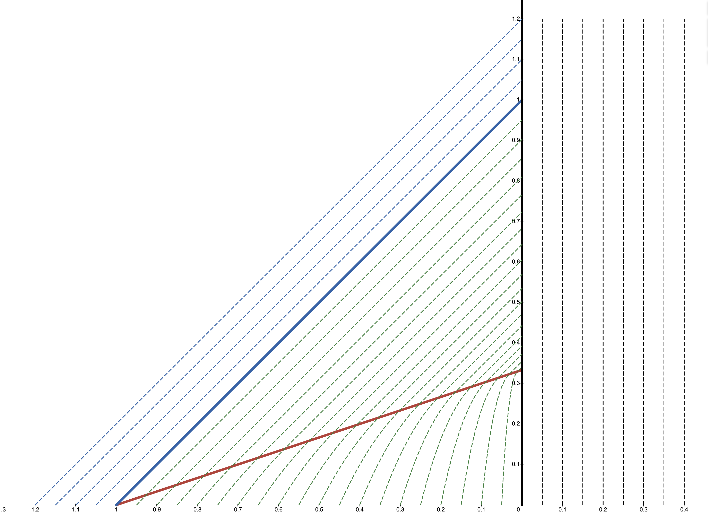
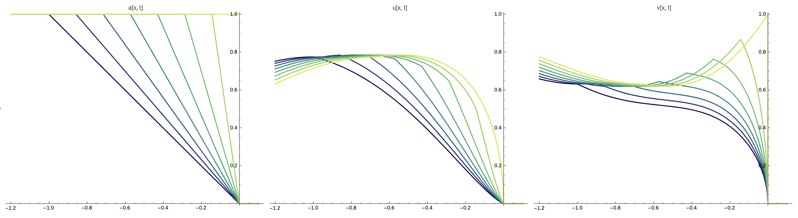
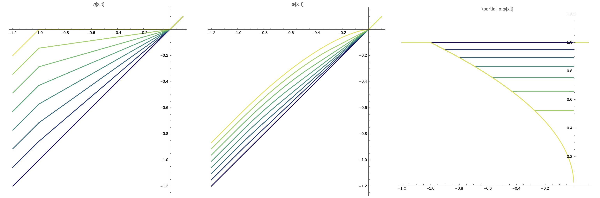

We construct an explicit, non-trivial, over-compressive shock solution to the Brio-Hunter-Freistuhler (BHF) system — a non-strictly hyperbolic conservation law. By decoupling through Riemann invariants and solving the resulting Burgers equation with piecewise-linear initial data, we determine the solution and all characteristics in closed form. To our knowledge this is the only known non-trivial exact solution exhibiting over-compressive shock formation for this system.
This post summarizes work from a project that will not be published but that I thought was neat. To my knowledge this is the only known exact and non-trivial over-compressive shock. Enjoy!
We study the shock-formation problem for the Brio-Hunter-Freistuhler (BHF) equation
$$\begin{align*} \partial_t \boldsymbol{u} + \partial_x(|\boldsymbol{u}|^2\boldsymbol{u}) &= 0, \\ \boldsymbol{u}(x, 0) &= \boldsymbol{u}_0(x), \end{align*}\tag{1.1}$$for $\boldsymbol{u}:\mathbb{R}\rightarrow\mathbb{R}^2$ with given Cauchy data $\boldsymbol{u}_0$.
Let $\boldsymbol{u}=(u,v)$ be the solution to (1.1) with associated fast and slow characteristics $\eta$ and $\psi$. Let the solution develop a gradient blowup, i.e. pre-shock, at the space-time location $(x_*, T_*)$.
By writing $\boldsymbol{u}=(u, v)$, we can re-write the BHF equation (1.1) as
$$\begin{align*} \partial_t u + (3u^2 + v^2)\partial_y u + 2uv\,\partial_x v &= 0, \\ \partial_t v + (3v^2 + u^2)\partial_y v + 2uv\,\partial_x u &= 0. \end{align*}\tag{1.2}$$Computing the eigenvalues of this system yields the wave-speeds
$$\lambda_1 = u^2 + v^2, \qquad \lambda_2 = 3(u^2 + v^2) = 3\lambda_1.$$The non-strict hyperbolicity is immediately apparent as these wave-speeds coincide at points where $u$ and $v$ vanish. An attempt to study this equation along Riemann invariants will fail, since the Riemann invariants are given by
$$a = u^2 + v^2, \qquad b = 0, \tag{1.3}$$one of which is trivial. The non-trivial Riemann invariant is still useful for the analysis, and we can replace the equation for $u$ by the equation for $a$ to decouple the $a$ dynamics from the $v$ dynamics. This leads to the equivalent system
$$\begin{align*} \partial_t a + 3a\,\partial_y a &= 0, \tag{1.4a} \\ \partial_t v + a\,\partial_y v + v\,\partial_y a &= 0. \tag{1.4b} \end{align*}$$In this new system $\lambda_1 = a$, $\lambda_2 = 3a$. Equation (1.4a) is a time-rescaled Burgers equation which does not depend on $v$, and equation (1.4b) is a passive transport equation with drift $a$.
Observe that $a=0$ is a stationary point of Burgers equation (1.4a). Thus we can recover $u(x, t)$ by the formula
$$u(x, t) = \operatorname{sign}(u_0(x))\sqrt{a(x, t) - v^2(x, t)}.$$We choose to study the system (1.4) in Lagrangian coordinates. Let $\eta$ and $\psi$ be the fast and slow characteristics respectively, satisfying the ODEs
$$\begin{align*} \partial_t \eta(x, t) &= \lambda_2(x, t) = 3a(\eta(x, t), t), \tag{1.5a} \\ \partial_t \psi(x, t) &= \lambda_1(x, t) = a(\psi(x, t), t). \tag{1.5b} \end{align*}$$Define $A = a(\eta(x, t), t)$ and $V = v(\psi(x, t), t)$. Differentiating these quantities in time gives the evolution equations along the fast and slow characteristics
$$\begin{align*} \partial_t A &= 0, \tag{1.6a} \\ \partial_t V + V(\partial_y a)(\psi(x, t), t) &= 0. \tag{1.6b} \end{align*}$$Since $A$ remains constant we can re-write (1.5a) as $\partial_t \eta = 3a_0(x)$ and immediately obtain the exact solution
$$\eta(x, t) = x + 3a_0(x)\,t. \tag{1.7}$$We now turn to the slow characteristics $\psi$. Solving (1.5b) gives
$$\psi(x, t) = x + \int_{0}^t a(\psi(x, t'), t')\,dt'. \tag{1.8}$$If $a$ is piecewise $C^1$, then
$$\psi_x(x, t) = 1 + \int_{0}^t (a_y)(\psi(x, t'), t')\,\psi_x(x, t')\,dt',$$which is an integral equation for $\psi_x$ with solution
$$\psi_x(x, t) = \exp\!\left(\int_{0}^t (a_y)(\psi(x, t'), t')\,dt'\right). \tag{1.9}$$Finally, observe that along the slow characteristics $\psi$, the solution to the ODE (1.6b) is given by
$$\begin{align*} V(x, t) &= v_0(x)\exp\!\left(\int_{0}^t (a_y)(\psi(x, t'), t')\,dt'\right) \\ &= v_0(x)\,\psi_x^{-1}(x, t). \end{align*}$$We choose initial data so that the following conditions are satisfied
$$a_0(0)=0, \qquad \lim_{x\rightarrow 0^{-}}a_0'(x) = \inf_{x < 0} a_0'(x) > -\infty, \qquad a_0'(x) > 0 \;\text{for all}\; x < 0. \tag{2.1}$$These conditions ensure that there is a unique blowup label occurring at the origin, and at this blowup label the system must undergo non-strictly hyperbolic dynamics.
These conditions can only be satisfied if $a_0(x) = \mathcal{O}(|x|)$ near $x=0$. Let $\gamma > 0$. Observe that if this condition were not true, then either one of the two things must be true, either $a_0(x) = \mathcal{O}(|x|^{1-\gamma})$ or $a_0(x)=\mathcal{O}(|x|^{1+\gamma})$. In the first case we must have $\gamma \leqslant 1$, and $a_0'(x) = \mathcal{O}(|x|^{-\gamma}\operatorname{sign}(x))$. Now we have $\lim_{x\rightarrow 0^{-}}a_0'(0) = -\infty$ and the solution will instantaneously form a shock (i.e. we will be doing shock development instead of shock formation). In the second case $a_0'(x) = \mathcal{O}(|x|^\gamma)$ and it is clear that $\lim_{x\rightarrow 0^{-}}a_0'(0)$ is not the global infimum.
Since $a_0(x) = \mathcal{O}(|x|)$, it follows that $u_0, v_0 = \mathcal{O}(|x|^{1/2})$ near the origin, so that for the purposes of over-compressive shock formation the initial data must lie in $C^{1/2}(\mathbb{R})$.
We solve (1.4) exactly to build intuition about the mechanisms leading to over-compressive shock formation for this system. We choose any initial data $u_0, v_0$ such that $a_0 := u_0^2 + v_0^2$ satisfies
$$\begin{align*} a_0 = \begin{cases} 1, \qquad &x\leqslant -1, \\ -x, \qquad &-1 < x < 0, \\ 0, \qquad &0 \leqslant x \end{cases}. \end{align*}\tag{2.2}$$It is easy to check that the unique solution to Burgers equation (1.4a) is then given by
$$\begin{align*} a(x, t) = \begin{cases} 1, \qquad &x \leqslant -3\!\left(\frac{1}{3}-t\right), \\ -\dfrac{x}{3\!\left(\frac{1}{3}-t\right)}, \qquad &-3\!\left(\frac{1}{3}-t\right) < x < 0, \\ 0, \qquad &0 \leqslant x \end{cases}. \end{align*}\tag{2.3}$$The fast characteristics can easily be computed from (1.7) and are given by
$$\begin{align*} \eta(x, t) = \begin{cases} x + 3t, \qquad &x \leqslant -1, \\ x(1-3t), \qquad &-1 < x < 0, \\ x, \qquad &0 \leqslant x \end{cases}. \end{align*}$$With these computations in hand we can now exactly solve ODE (1.5b) governing $\psi$ and thus completely determine $V$.

For any $x < -1$, it should be obvious that from (2.3), $\psi(x, t) = x+t$. Similarly for any $x > 0$ we have that $\psi(x, t)= x$. The only difficulty is for when $-1 < x < 0$. The solution we will construct can be understood more easily by studying Figure 1. For $-1 < x < 0$, trajectories start off evolving according to
$$\partial_t \psi = -\frac{\psi}{3\!\left(\frac{1}{3}-t\right)},$$but collide with the line $x=-3\!\left(\frac{1}{3}-t\right)$ at the finite time
$$t^\flat(x) := \frac{1}{3} - \frac{1}{3}|x|^{3/2}$$and location
$$x^\flat(x) := -|x|^{3/2},$$at which point they satisfy the ODE $\partial_t \psi = 1$ until they hit the shock at $x=0$. Thus we arrive at the solution
$$\psi(x, t) = \begin{cases} x + t, \qquad &x \leqslant -1, \\ x\!\left(\dfrac{\frac{1}{3}-t}{\frac{1}{3}}\right)^{\!\!1/3}, \qquad &-1\leqslant x < 0 \;\text{and}\; t < t^\flat(x), \\ t-t^\flat(x)+x^\flat(x), \qquad &-1\leqslant x < 0 \;\text{and}\; t \geqslant t^\flat(x), \\ x, \qquad &0 \leqslant x. \end{cases}$$
It is then an easy exercise to compute the derivative and inverse of $\psi$ exactly:
$$\psi_x(x, t) = \begin{cases} 1, \qquad &x \leqslant -1, \\ \left(\dfrac{\frac{1}{3}-t}{\frac{1}{3}}\right)^{\!\!1/3}, \qquad &-1\leqslant x < 0 \;\text{and}\; t < t^\flat(x), \\ |x|^{1/2}, \qquad &-1\leqslant x < 0 \;\text{and}\; t \geqslant t^\flat(x), \\ 1, \qquad &0 \leqslant x. \end{cases}$$and
$$\psi_{-1}(x, t) = \begin{cases} x - t, \qquad &x - t \leqslant -1, \\ x\!\left(\dfrac{\frac{1}{3}-t}{\frac{1}{3}}\right)^{\!\!-1/3}, \qquad &-1\leqslant x < 0 \;\text{and}\; t < t^\flat\!\left(x\!\left(\dfrac{\frac{1}{3}-t}{\frac{1}{3}}\right)^{\!\!-1/3}\right), \\ -\!\left(\dfrac{3}{2}\!\left(\tfrac{1}{3}+x-t\right)\right)^{\!\!2/3}, \qquad &-1\leqslant x < 0 \;\text{and}\; t \geqslant t^\flat\!\left(x\!\left(\dfrac{\frac{1}{3}-t}{\frac{1}{3}}\right)^{\!\!-1/3}\right), \\ x, \qquad &0 \leqslant x. \end{cases}$$The solution $u, v$ is exactly determined by
$$v(y, t) = v_0(\psi_{-1}(y, t))\,\psi_x^{-1}(\psi_{-1}(y, t), t), \qquad u(y, t) = \sqrt{a(y, t) - v^2(y, t)}.\tag{2.4}$$Note that $u_0$ is completely determined by an arbitrary choice of $v_0$ satisfying only the condition that $v_0^2(x) \leqslant a_0(x)$.
